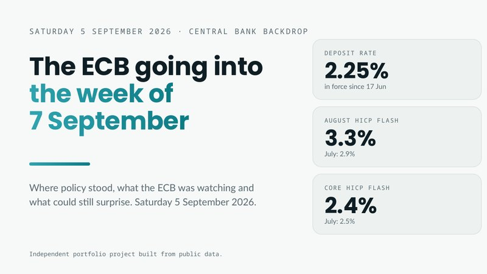
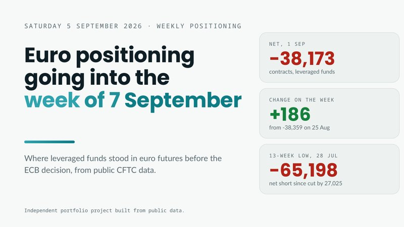
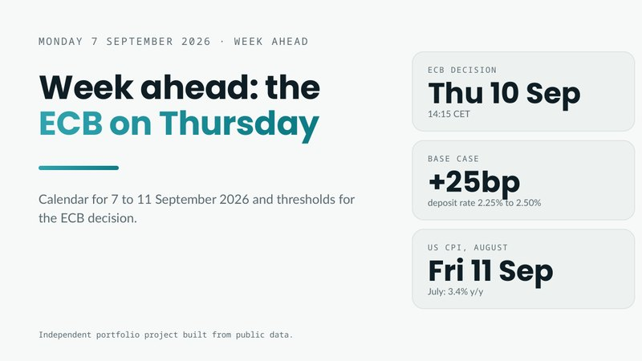
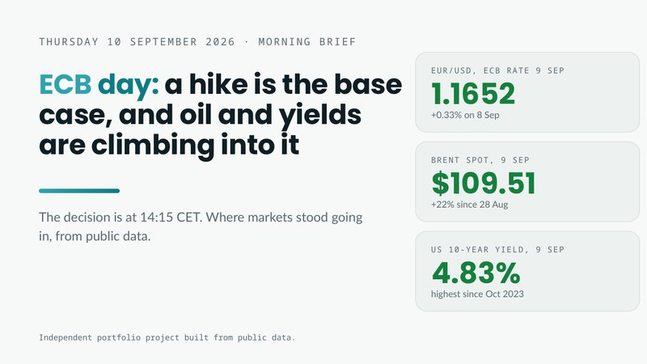
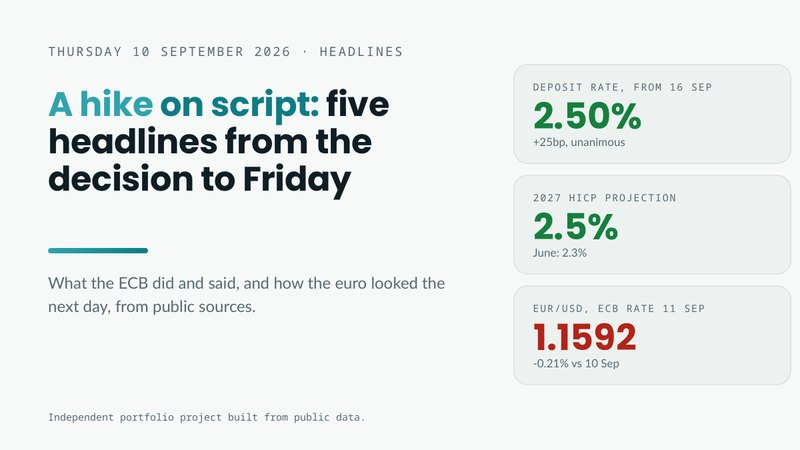
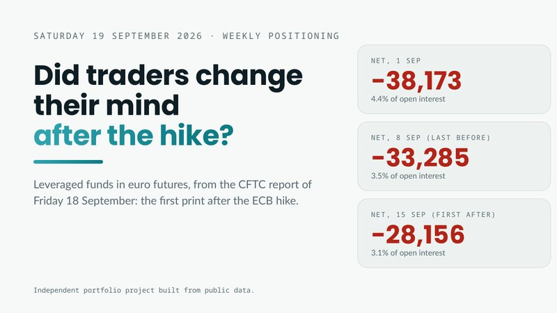

Case study · Macro and data · Public data only
Why did the ECB's hike barely move the euro?
On Thursday 10 September 2026 the European Central Bank raised rates by 25 basis points. The euro hardly reacted. I followed that week the way a research desk would, from the Saturday before to the Saturday after, and wrote each document as if on its own date, using only what was public by then.
Market odds of a September hike, per the Bundesbank President on 2 Sep.
Deposit rate, up 25bp from 2.25%. Unanimous, guidance unchanged.
ECB reference rate, 1.1616 on 10 Sep to 1.1592 on 11 Sep.
Average reaction as a multiple of a normal day. No clear effect on decision days.
The short answer: the hike was news to nobody. Funds were only mildly short the euro, the guidance did not change, and US data landed fifteen minutes after the decision. Across eight ECB meetings, decision days did not move the euro more than ordinary days.
Run the analysis yourself in the interactive labCentral bank backdrop: the ECB going into the week

Where policy stood, what the ECB was watching, and what was priced. Rates, the guidance sentence, the inflation trend and what could still surprise.
Weekly positioning: euro futures going into the week

Public CFTC data. Leveraged funds were net short 38,173 euro contracts, 4.4% of open interest: a mild short, far smaller than the yen's.
The week ahead: the ECB on Thursday, then US CPI

A calendar for each day and three scenarios with exact thresholds for the decision, written before anything happened.
Morning brief: a hike is the base case

Markets, oil, yields and the day's calendar before the 14:15 CEST decision, Frankfurt time. Every level dated the day before or earlier.
Five headlines from the decision to Friday

The decision, the projections, the press conference, a policymaker's view and the turn to US CPI. Each card checked against Monday's scenarios.
Evening recap: the hike was on script, the projections were not

Projections leaned hawkish, yet US producer prices came out fifteen minutes later. Written without Friday's data.
Weekly positioning: did traders change their mind?

The first CFTC print after the decision. The net short kept narrowing at the same pace as the week before: no change of course.

Run the analysis yourself.
Same public data as the documents: ECB reference rates, the ECB's projections and CFTC positioning. Change an input and the result is recalculated in your browser.
On Monday 7 September I wrote down thresholds for the decision before anything happened. Set the inputs the way you think the ECB will land, or load what it actually announced, and the rules call the scenario.
| Signal | B: weaker euro | C: in between | A: stronger euro | Reads |
|---|---|---|---|---|
| Rate move | Hold | 25bp | More than 25bp | |
| Guidance | Signals a pause | June sentence unchanged | Points to another hike | |
| 2027 headline | 2.1% or lower | 2.2% to 2.4% | 2.5% or higher | |
| 2027 core | 2.3% or lower | 2.4% to 2.6% | 2.7% or higher | |
| GDP 2026 or 2027 | Either cut 0.2 or more | Both within 0.1 | Either raised 0.2 or more |
Rule, as written on Monday: a rate move or wording in column A or B decides on its own. With 25bp and unchanged wording, two projection rows in the same outer column call A or B. Anything else is C.
What happened next. By the rules the day read as A, a hawkish tilt inside an expected hike. Yet the euro fixed 0.21% lower the next day (1.1616 to 1.1592), and US producer prices landed 15 minutes after the decision. One fixing a day cannot separate the ECB from the US data released in the same window.
EUR/USD, ECB reference rate, every fixing from 1 Jul 2025 to 18 Sep 2026. Pick a meeting to see what was expected, what the euro did next and how that compares with a normal day.
The study asks one question: does the euro move more after an ECB decision than on a normal day? Change how a normal day is measured and where the flag line sits. The benchmark uses the same rule on every day in the data.
These are the settings used in the study PDF and workbook: 60 fixings and a 1.5 line.
CFTC positioning in euro futures, every Tuesday from 26 May to 15 Sep 2026. Below zero means the group is net short the euro.
Leveraged funds across currencies, 1 Sep 2026 net as % of open interest
The euro short was mild: 4.4% of open interest, against 24.8% for the yen. Contract sizes differ, so currencies are compared on % of open interest.
Sources: ECB Data Portal (EXR.D.USD.EUR.SP00.A), ECB monetary policy decisions of 11 Jun and 10 Sep 2026, ECB meeting accounts, CFTC Traders in Financial Futures (Euro FX 099741 and six other CME currency contracts). Accessed 19 to 21 Oct 2026.
Was this week unusual?
Move on the next day in EUR/USD after each decision, as a multiple of a normal day (average absolute daily move over the prior 60 fixings).
| Decision | Outcome | Next day | Ratio |
|---|---|---|---|
| 30 Oct 2025 | Hold | +0.03% | 0.12 |
| 18 Dec 2025 | Hold | −0.06% | 0.26 |
| 5 Feb 2026 | Hold | −0.03% | 0.13 |
| 19 Mar 2026 | Hold | +0.57% | 1.93 |
| 30 Apr 2026 | Hold | −0.02% | 0.05 |
| 11 Jun 2026 | Hike | +0.26% | 0.96 |
| 23 Jul 2026 | Hold | −0.13% | 0.63 |
| 10 Sep 2026 | Hike | −0.21% | 1.04 |
Result: no clear difference
Average ratio 0.64, median 0.44. One decision day in eight passed the 1.5 flag, against 20.6% of all days in the data. The 10 September hike sits at 1.04: an ordinary day.
Rules I held every document to.
Public sources only
ECB, Eurostat, CFTC, BLS, US Treasury, FRED and national central banks. Every number has a link and an access date.
No hindsight
Each document uses only what was public on its date. The Thursday morning brief was written before the decision at 14:15 CEST, Frankfurt time, so it does not know the outcome.
One fact sheet
Every figure lives in a shared fact sheet, verified once and reused exactly, so no two documents disagree.
Everything behind this page.
Independent portfolio project built from public data. Not investment advice.